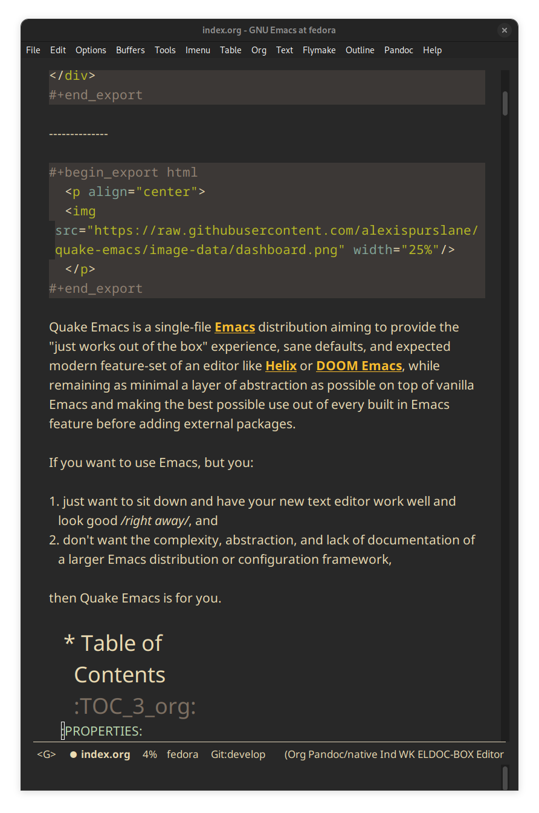

Quake Emacs
A beautiful, modern, single-file, vanilla-first Emacs anti-distribution

Quake Emacs is a single-file Emacs distribution aiming to provide the "just works out of the box" experience, sane defaults, and expected modern feature-set of an editor like Helix or DOOM Emacs, while remaining as minimal a layer of abstraction as possible on top of vanilla Emacs and making the best possible use out of every built in Emacs feature before adding external packages.
If you want to use Emacs, but you:
- just want to sit down and have your new text editor work well and look good right away, and
- don't want the complexity, abstraction, and lack of documentation of a larger Emacs distribution or configuration framework,
then Quake Emacs is for you.
1. Table of Contents TOC_3_org
2. Key Features
- üéØ Lean and focused: Quake Emacs includes only the packages and configuration needed for a beautiful and modern coding experience, a distraction-free writing experience, and a powerful note-taking experience. It even mostly does away with the need for large language-specific collections of packages through the use of tree-sitter and LSP support! Consider Quake Emacs part of your editor, just there to give you a good out of the box experience to jump off from and make your own.
- üöÄ Fast: On my machine, with everything enabled, Quake Emacs loads in under 0.5 seconds. Every single package is carefully chosen with performance in mind, and the default load order is tuned obsessively to ensure Emacs starts as fast as possible. Enjoy fast startup times, or use it as extra headroom to add your own packages.
- ü•á Just one single file: The Quake code itself is only one simple, extensively documented, self-contained 1000-line file. That's it. Just put the file in your Emacs directory and go. No external commands, no multiple thousands of lines of Lisp scattered throughout hundreds of files across interminable layers of abstraction. If you want to know where something is, or how it works, it's easy to find.
- üåê Modern yet vanilla-first: Despite having the modern UI/UX people have come to expect from an editor, Quake Emacs prioritizes using Emacs's built-in capabilities plus packages that integrate well with them as much as feasibly possible. If a feature can be achieved through something in vanilla Emacs, that is always prioritized; if it can't, packages that build as much as possible on built in features are prioritized. Nevertheless, Quake holds a modern UI/UX experience as a very high priority – extra packages will be added when necessary to achieve that.
- üòá Uses god-mode: Although Quake Emacs provides an extensive and well-integrated optional layer for
evil-modeusers, core Quake Emacs instead focuses ongod-modefor those who want the power of blessedly key-modifier free modal editing within the holy domain of Emacs sincegod-modeis more in line with our philosophy of strategically using small packages to build on and enhance built in functionality, instead of replacing it entirely. For more information, please see 8. - üíª Self-updating: Although Quake Emacs tries to avoid custom code and tooling, it also wants to avoid you having to deal with separate CLI programs outside of Emacs even more. In the interest of that, Quake Emacs is able to detect if there are new updates available for your editor asynchronously on startup and update itself if you ask it to (and only then) using git under the hood.
3. How To Install
Convinced?
First, install the Quake Emacs project directly to your Emacs configuration directory, so Quake can take over your Emacs installation:
git clone --depth=1 -b main https://github.com/alexispurslane/quake-emacs.git ~/.emacs.d
Then copy the example
user.elprovided with Quake to your Quake Emacs configuration directory at~/.quake.d/user.el:mkdir -p ~/.quake.d/ && cp ~/.emacs.d/user.el ~/.quake.d/
To update, just
git pullto the latest tag. I recommend you check the release notes for the tag for any tips, known issues to avoid, etc.- Once the directories are set up, simply launch Emacs and it should begin downloading and installing the packages that make up Quake Emacs, as well as configuring them. Installation is idempotent, and the install process can take some time, so feel free to close Emacs anytime you need to — it will pick up where it left off next time!
- Once Quake Emacs has installed and configured all its packages, the next step will be making sure it supports the languages you want to work in, which leads us to the next section…
4. Showcase
4.1. Simple Config
Before I get to showing you any of the fancy things Quake Emacs can do, the most important thing is proving that it will be manageable for you to understand and fork if necessary, and won't lead either you or me to Emacs bankruptcy. One of the key things I've done in this regard is optimizing the layout of init.el to work with Emacs's built-in outline-minor-mode to help you get an overview of it and jump to specific things in it without needing finicky text search or getting overwhelmed:

It's much more difficult to demonstrate code clarity and simplicity in a GIF, though, so if you're still skeptical, I highly encourage you to skim the source code yourself.
⚠️ Why isn't this a literate config? I've seriously considered it for code clarity reasons, but decided against it for a number of reasons:
- First, as a literate config, I'd want to move all the per-layer documentation out of docstrings and into the org mode markup to avoid tedious duplication, but then eldoc wouldn't document layers for you.
- Second, it would mean Quake Emacs would really be two files, instead of one and a user file, which is annoying. I do want it to be as self-sufficient as possible. In fact, I'm planning on making the user file optional.
- Third, it adds a layer of indirection and complexity that goes against the core goal of Quake Emacs: with a literate config, I'd have to use org-tangle to 'compile' it before it could be loaded into Emacs, and it would be possible for the literate config and the tangled config to get out of sync locally, not to mention needing to use {C-c '} to edit the blocks.
- And fourth, it would probably significantly slow start times, since =load=ing is slow, and I want to avoid that. However, I've tried to get as close to what a literate configuration file would offer by other means
Feel free to open an issue if you think this was a bad choice, though!
4.2. Code Editing
Quake Emacs has fuzzy autocompletion with Corfu and Orderless enabled everywhere.

Full autocompletion even works in the Lisp Eval line (M-:). It's a real REPL, so why not have a real coding experience in it?

We also have a vertical fuzzy searching UI for popups, with live narrowing, like you're used to in other modern editors, available using Emacs's built-in completion UI, Icomplete! No need for Vertico now that we have icomplete-vertical-mode and the ability to tweak icomplete's existing settings to remove all the limits and delays, and especially since Orderless, Marginalia, and Consult integrate with vanilla Emacs's existing functions and capabilities, so anything that makes use of them is automatically enhanced!

Quake Emacs also features which-key for more discoverable keybindings, and god-mode for ergonomic modal editing while remaining fully compatible with vanilla Emacs – all the same mnemonics, commands, and concepts are available, you can just access them without twisting your fingers into pretzels!

Quake Emacs also provides IDE class-features thanks to LSP support via Eglot and eldoc-box, highly automatic tree-sitter support with treesit-auto, tree sitter structural editing support with puni, inline errors and linting and even quick-fixes with Eglot's integration with Flymake, and advanced language-agnostic debugging with DAPE. Here's just LSP and eldoc-box (and tree-sitter's syntax highlighting and structural navigation) on display:

Quake Emacs also comes with puni, a vanilla-Emacs-first structural editing package similar to the more popular Smartparens but using Emacs's built in syntax tables and structural editing commands instead of requiring complex language-specific logic. For more on what that looks like in practice, click the link to puni in 5 above.
And, Quake Emacs wouldn't be able to live up to its name unless it had a classic Quake-style popup terminal! So here it is, implemented entirely without any external packages, and bound to SPC ~:

4.3. Writing
For those of you who prefer to write your prose in the thermonuclear word processor, I've created a beautiful but minimal (and fast) writing mode for org-mode buffers, which:
- Uses mixed fonts to give you a WYSIWYG experience, including a variable pitch font of your choice for body text, typographically correct heading font sizes, bold, underlined, strikethrough, and monospace fonts for the appropriate markup, monospace fonts and syntax highlighting for code blocks, and more.
- Uses
visual-fill-column-modeto center your text and responsively soft wrap and fill it to 65 columns like a proper word processor. - Offers integration with Vale, which provides extremely fast and customizable prose linting – so that you have the advise of some of the English language's greatest writers and editors automatically applied to your prose, turning you into a Reverend Mother with a genetic memory for prose writing – and spellcheck (replacing
flyspell-modebecause it was causing half-seconf pauses every so often in sufficiently large files). - A custom
ispellauto-correct function to go along with Vale's spellchecking facilities, allowing you to just hit a single key command and have the most likely correction be made to the current word. - Custom functions to use Embark to automatically add or remove words from your personal Vale spelling dictionary.
- Hide extra headline stars.

Also, I've included the incredible Embark package, which uses intelligent recognition of plain text patterns and the structured metadata many Emacs packages add to that plain text in various contexts, can show you menus of contextually-relevant actions for whatever's under your cursor, effectively turning any Emacs buffer – whether org-mode or not – or any Emacs interface into an intelligent, context-aware hypertext system. You can now insert and follow org links in any buffer, as well as many other things! Take a look at the huge number of concepts and contextual actions Embark supports out of the box here, and Quake even adds a few, such as the ones I mentioned above for spellchecking, and ones for running keyboard macros.
4.4. Note-taking
Many people use comprehensive external package for org-mode such as org-roam or Denote for Zettelkasten note taking. However, org-mode itself actually contains all the functionality necessary for a Zettelkasten note taking system in addition to the more typical structured hierarchical note taking format Org lends itself to! This built in functionality includes:
- Easily and instantly making new atomic notes, whether as headings in existing files, or totally new files in your notes directory with
org-capture, - Quickly (with autocompletion) linking to any heading in any file in your notes directory from any other, or even external files, with
org-insert-linkandorg-insert-link-global, - Easily browsing and searching through all of the headings in all of your note files, either looking for keywords, tags, or arbitrary metadata, using
consult-org-agendaororg-agendaSearch (for more features), - Searching the full text of your second brain with
org-agendaMulti-Occur, - Referring to notes and headings universally through unique IDs instead of names or titles, so that you can freely change the titles of things without worrying about breaking links with
org-id-link-to-org-use-id, - Finding backlinks to a note using
quake-org-backlinks, - Easily capturing a link to a note with
org-store-link, - Easily refile any note to any file or heading in your note directory using a customized
org-refile-targets, - Follow any org link from any other file with
embarkandorg-open-at-point-global.
This seems like a reasonably complete selection of features for a ZK system to me, and while using only built-in vanilla org-mode functionality for Zettelkesten note taking may be a little less featureful than the aforementioned packages, it has several advantages:
- It allows you to learn less: you'll be using the same tools to manage, link, reference, search, create, and edit both hierarchical notes in the traditional org way, and ZK notes – the only difference will be just how you use those tools. There will be no extra commands to learn, no extra package manuals to consult, and nothing to install, so you won't miss anything if you switch away from Quake or temporarily have to use vanilla Emacs.
- Since the tools will all be the same, and you can fluidly link to separate files or headings within files from any file, as well as fluidly using
org-captureto create new note files as well as create new headings in the same file, doing things this way will allow you to fluidly move back and forth between hierarchical structured notes and ZK notes in whatever way makes sense to you, without having to use an inconsistent set of tools. - You can decide how you want to organize your notes: maybe you want each atomic note in its own file. Maybe you want to treat files as "vaults" of ZK notes, where each atomic note is a top level heading in that file. Maybe you want to create trees of atomic notes in each file. Do whatever you want! With the way Quake has
org-modeconfigured, the tools should be convenient and intuitive no matter what you do.
5. Justification
With the introduction of various modern Emacs features in the last few years, and the emergence of a new generation of Emacs packages focused on integrating with vanilla Emacs, Emacs distributions as we have known them are less and less relevant:
use-packagemeans the large suites of macros layered on top ofpackage.el(and sometimes external CLI commands) provided by configuration frameworks are no longer necessary: vanilla Emacs, by itself, is now capable of readable, clearly organized, declarative, self-installing package management, that is in fact far simpler than the alternatives provided by e.g. DOOM Emacs and far better documented and widely used (a community standard).eglotandtreesit.elmean you no longer need to install external packages for excellent Language Server and Tree Sitter support (that in fact integrates better with built in Emacs concepts likexrefandforward-sexpthan the external alternatives) which in turn means that the language "layers" provided by large Emacs distributions are on their way out – no longer do you need to install and deeply configure five or six packages to support a language inside Emacs, it's either no packages (if the -ts mode is available in core Emacs) or one package for IDE-lite level support!- With the inclusion of
icomplete-verticaland Prot's discovery of how to turn off all the delay timers inicomplete, live vertical fuzzy completion is available by default in core Emacs, no need for Ido, Ivy, Helm, or even Vertico. - With the integration of Tree Sitter queries into the syntax table in Emacs
-tsmodes (thanks totreesitbeing added in core), Emacs's built in structural editing commands can now operate on Tree Sitter concrete syntax trees, thus obviating the need for TS-specific packages like Combobulate and tree-edit which have to write and maintain queries for every language they want to support and stop working as soon as you use a language that doesn't have tree sitter yet. Instead, Quake Emacs relies on the built in Emacs structural editing commands and puni, which builds more advanced structural editing on top of them, allowing Quake Emacs to achieve language agnostic support for structural editing operations. These operations can gracefully degrade their functionality from Lisp, to Tree Sitter, to syntax tables and regular expressions, to just brackets/parens/etc, allowing the confident integration of structural editing into everyday text editing. - With new features in
org-mode, large and complex packages likeorg-roamor Denote for ZK note taking aren't strictly necessary anymore. Likewise, through the combination of Embark andorg-mode, Emacs can achieve a significant fraction of the implicit hypertext and information organization power of GNU Hyperbole with greater integration with the standard Emacs behavior and interface, and with other packages, and improved documentation. - Thanks to
orderless,marginalia, andcorfu, a rich interface infused with useful metadata, fuzzy searching, and auto-completion (even in the minibuffer) is achievable without any specific integration code.
6. Supported Languages
Three things are required for Quake Emacs to support a language using the modern language support facilities built in to it:
6.1. Language Server
Your language server, of course, does not need to be installed within Quake Emacs. It is an independent program you will need to install on your host system to a path Emacs knows to look in for executables, at which point Quake Emacs's LSP package, Eglot, will probably be able to detect your language server automatically.
If Eglot cannot automatically detect your LSP, it is easy to specify a custom language server for a given mode.
Some languages, such as Common Lisp (SLIME/SLY) and Clojure (CIDER) have their own alternatives to a language server that you should use instead.
6.2. Tree Sitter Grammar
Tree sitter grammars are also technically external to Quake Emacs, since they are dynamic libraries that are loaded in at runtime; however, Quake Emacs's tree sitter support package expects them to be installed in a specific location by default (~/.emacs.d/tree-sitter/), and through the use of treesit-auto, Quake Emacs has a fairly large set of tree sitter grammers it knows how to automatically install from within the editor (please consult the language support matrix at the bottom of the parent section).
If treesit-auto does not have an auto-install recipe for the language you wish to use, simply use the built-in command treesit-install-language-grammar and follow the easy-to-understand prompts to install the grammar you want. After that, you should be all set!
6.3. Tree Sitter Mode
In order for Emacs to be able to interpret the meaning of the concrete syntax tree generated by the tree sitter grammar, it needs a tree-sitter mode for that language, to translate the syntax tree into font locking and syntax tables and so on. These are generally fairly simple to write, so a fair number of them are already built into Emacs, and more are being added over time (six in Emacs 30.1 alone!).
Nevertheless, some packages may need to be added to your user.el instead (remember to use use-package :ensure t, as the documentation link explains, instead of package-install, so that your configuration is reproducable on other machines).
For information on which are built into Emacs and which are not, please consult the language support matrix below.
6.4. Built-In Language Support Matrix
This matrix shows the list of languages that Quake Emacs has built-in support for in some capacity, and to what capacity that's true. There are many more languages that have tree-sitter modes available for them, and still more languages that Emacs supports in the traditional way, which can also be installed with use-package as mentioned above.
| Language | Tree-Sitter Mode Built In? | Tree-Sitter Grammar Auto Install? |
|---|---|---|
| Bash | ✅ | ✅ |
| PHP | ✅ | ❌ |
| Elixir | ✅ | ✅ |
| HEEx | ✅ | ✅ |
| HTML | ✅ | ✅ |
| LUA | ✅ | ✅ |
| C++ | ✅ | ✅ |
| C | ✅ | ✅ |
| CMake | ✅ | ✅ |
| C# | ✅ | ✅ |
| CSS | ✅ | ✅ |
| Dockerfile | ✅ | ✅ |
| Go | ✅ | ✅ |
| Java | ✅ | ✅ |
| JS | ✅ | ✅ |
| JSON | ✅ | ✅ |
| Python | ✅ | ✅ |
| Ruby | ✅ | ✅ |
| Rust | ✅ | ✅ |
| TOML | ✅ | ✅ |
| TSX | ✅ | ✅ |
| TypeScript | ✅ | ✅ |
| Yaml | ✅ | ✅ |
| awk | ❌ | ✅ |
| bibtex | ❌ | ✅ |
| blueprint | ❌ | ✅ |
| clojure | ❌ | ✅ |
| commonlisp | ❌ | ✅ |
| dart | ❌ | ✅ |
| glsl | ❌ | ✅ |
| janet | ❌ | ✅ |
| julia | ❌ | ✅ |
| kotlin | ❌ | ✅ |
| latex | ❌ | ✅ |
| magik | ❌ | ✅ |
| make | ❌ | ✅ |
| markdown | ❌ | ✅ |
| nix | ❌ | ✅ |
| nu | ❌ | ✅ |
| org | ❌ | ✅ |
| perl | ❌ | ✅ |
| proto | ❌ | ✅ |
| r | ❌ | ✅ |
| scala | ❌ | ✅ |
| sql | ❌ | ✅ |
| surface | ❌ | ✅ |
| typst | ❌ | ✅ |
| verilog | ❌ | ✅ |
| vhdl | ❌ | ✅ |
| vue | ❌ | ✅ |
| wast | ❌ | ✅ |
| wat | ❌ | ✅ |
| wgsl | ❌ | ✅ |
If you want support for another language, one place to start is the list of =-ts-mode=s available for Emacs on GitHub.
7. Personal Configuration and Extra Layers
When writing custom configuration in your user.el, it is recommended that you separate your configuration out into logical groups according to general purpose, with each group contained within a function (and preferably with everything within those functions/groups bundled neatly into use-package declarations). This is precisely what Quake Emacs does — we call these logical units "layers", after the fashion of Doom Emacs and Spacemacs, although they're just regular functions, no boilerplate necessary — and it has a few benefits:
- It means that your code is easier to fold and navigate with imenu without even needing to insert outline headlines, and easier to document in an accessible way, since you gain the ability to attach docstrings not just to individual utility functions or
use-packages, but to logical groups of things, so you can document what you're doing and why at a higher level, essentially reproducing much of the benefit of a literate config. - It just means your code is more logically and neatly organized, the better to avoid Emacs bankruptcy.
- Finally, it means that you can take advantage of Quake Emacs's existing logic for running layers, and slot your own code neatly anywhere you want in the Quake Emacs load order, in case you need to run before some things but after others, without having to modify the core
init.elor do any other hacks.
Out of the box, Quake Emacs contains only the layers that you will absolutely need for a good general-purpose writing, note taking, and code editing experience, as explained above. However, if you find yourself needing more functionality, in addition to writing your own layers, I have a few Gists containing some layers I've constructed for personal use, here, which you can either use yourself, or treat as examples of how to write Quake Emacs layers:
| Layer Name | Layer Description |
|---|---|
| org-static-blog-layer | Use org-mode and Emacs to directly generate your blog, no external programs needed! Have your blog wherever you have your editor! |
| eshell-layer | Modernize eshell, for those used to modern shells like Fish and Nushell, or heavily extended Zsh. |
| gnus-proton-mail-layer | Use GNUS to send (asynchronously!) and receive mail with Proton Mail. |
| tramp-distrobox-layer | Use TRAMP with Distrobox (for immutable distros mainly) |
| devil-layer | A basic set of Doom/Spacemacs style leader-key keybindings to get you started. (Quake Emacs has switched to god-mode and a package that makes god-mode behave like a leader key, because it's more compatible with vanilla emacs, and much easier to maintain.) |
| evil-layer | Not part of the core Quake Emacs distribution, but probably common enough of a desiderata that it is provided in the main repo instead of a Gist. Enables evil mode and evil collection, and switches god mode to work as a leader key using evil-god-mode. |
⚠️ If you write a layer you think might be generally useful to others, as long as it is reasonably small and self-contained, you are more than encouraged to submit a PR on this readme so we can add it to the list!
8. Keybindings
8.1. Default keybindings
⚠️ You can find a guide to reading Emacs keybinding notation here.
Quake no longer provides evil-mode and evil-collection out of the box, since that runs contrary to trying to make the most out of what already exists in Emacs instead of building a new editor on top of it. Moreover, despite having used Vim for years and evil mode for even more years, it is my opinon that the built-in editing operations and concepts provided by Emacs are equal to, if not superior to, those provided by Vim – e.g. I prefer the built in structural editing to Vim's conception of files as solely composed of characters, the idea of regions and marks, the circular nature of the kill ring, undo being a stack so that you can't lose information by editing after undoing, the interactive nature of commands like query-replace, the greater power of its regular expression engine, and more. In addition, it is my opinion that the greater composability and memorizability of Vim's text editing grammar can be trivially mirrored by simply combining regions, text object motion commands, the universal argument and number arguments, and region operations, to create an Emacs-native editing grammar (this is what my package prometheus-mode intends to make easier as a standard workflow by using Meow-like motion-selection text-objects on top of god-mode). If you do that bit of mental jujutsu, you can then learn the more direct region+action commands most Emacs users use at your own pace, simply as abbreviations for longer commands (which can allow you to achieve similar keystroke efficiency to Vim – see this also for god-mode – although I don't actually think keystroke efficiency should be the goal, in comparison to having high level editing concepts so that you don't have to think as much, good composability and learnability, and acceptable ergonomics).
However, the one advantage Vim's modal editing has over Emacs's is the ability to run text editing commands without the need for modifier keys. Thus, Quake does offer an alternative to evil mode that aligns more closely with its overarching philosophy for those who want to dabble in the ergonomic benefits of modal editing: god-mode. God mode can be activated by hitting ESC in any Emacs buffer, and deactivated to return to regular Emacs mode using i. God mode essentially provides a language for translating un-chorded keystrokes into Emacs's already-existing chorded ones – think of it like a smarter, more automatic version of sticky keys. This can save your fingers and carpel tunnels a lot of stress if you have pre-existing RSI. Crucially, it does not define any of its own keybindings, or reinvent the wheel in any way; it automatically uses all of Emacs's built in keybindings and any created by you or any package, keeping the form and mnemonics exactly the same, only allowing you to avoid the key modifiers.
The translation is pretty simple. Allow me to quote the god-mode documentation:
This package defines the following key mappings:
All commands are assumed to use the control modifier (
C-) unless otherwise indicated. Here are some examples:
x → C-xf → C-fxs → C-xC-sxSPCs → C-xsNote the use of the space key (
SPC) to produceC-xs.- The literal key (
SPC) is sticky. This means you don't have to enterSPCrepeatedly for key bindings such asC-xrt. Entering the literal key again toggles its state. The literal key can be changed through `god-literal-key`. Here are some examples:
xSPCrt → C-xrtxSPCrSPCgw → C-xrM-wgis used to indicate the meta modifier (M-). This means that there is no way to enterC-gin God mode, and you must therefore type inC-gdirectly. This key can be changed through `god-mode-alist`. Here are some examples:
gx → M-xgf → M-fGis used to indicate both the control and meta modifiers (C-M-). This key can also be changed through `god-mode-alist`. Here are some examples:
Gx → C-M-xGf → C-M-f- Digit arguments can also be used:
12f → M-12C-f- If you use some of the [useful key bindings][useful-key-bindings],
zor.can repeat the previous command:
gf.. → M-fM-fM-f- Universal arguments can also be specified using
u:
uco → C-uC-cC-o
Quake Emacs also defines several additional keybindings beyond the ones that Emacs has by default, for the various things it adds. It attempts to keep these as orderly as possible, and to adhere as closely as possible to traditional Emacs keybindings for things like org-mode, and hew as close to Emacs keybinding conventions as possible. Note, however, that Quake keybindings do occupy the "user" namespace, since Quake is technically a user-config. If this bothers you, simply switch off keys-layer in your user.el.
⚠️ To understand the following list, remember that its form reflects the fact that in Emacs all keybindings are a tree of key chords, navigated by pressing successive key chords.
- Top Level Keybindings
C-~shell-toggleC-x C-S-Ttranspose-regionsM-S-Uupcase-dwimC-S-Uupcase-charC-S-Roverwrite-modeM-Fforward-to-wordM-Bbackward-to-wordM-Aalign-regexpM-Ssort-linesM-Rreverse-regionM-jjoin-lineC-.repeatC-'puni-expand-regionC-"puni-contract-regionC-x @rectangle-mark-modeC-\=indent-regionC-c aorg-agendaC-c corg-captureC-c lorg-store-linkC-c Lorg-insert-link-globalC-c nquake-org-new-note-fileC-c Aconsult-org-agendaC-c wewwC-c &- Code Snippets
nyas-new-snippetsyas-insert-snippetvyas-visit-snippet-file
C-c p- Profile Management
tconsult-themef- open framework config
u- open user config
rrestart-emacsl- Reload user config
C-x- File, Buffer, and Project Manipulation
Kkill-current-bufferBibufferp Eflymake-show-project-diagnostics
C-c l- LSP Server
Eflymake-show-buffer-diagnosticseconsult-flymakeseglotaeglot-code-actionsreglot-renameheldocfeglot-formatFeglot-format-bufferReglot-reconnect
C-h- Helpful Docs
vhelpful-variablefhelpful-callablekhelpful-keyxhelpful-command
8.2. Evil mode
For those who really can't do away with evil mode, however – and there are plenty of valid reasons for this, from things like well-entrenched muscle memory, to advanced knowledge you don't want to start over on, to simply preferring it, to thinking it's more efficient; reasonable people can disagree on this! – Quake Emacs does offer an optional integration layer for evil mode.
The initial version of this included not just evil but also evil-collection, evil-treesit-textobj, evil-org in an attempt to provide consistent vim-style keybindings across the entire Emacs interface. The problem is that no matter how hard you try, if you're trying to one by one completely remap the keybindings of every mode in Emacs to conform to vim sensibilities, there will always be annoying lacunae where the keybindings fail, or features lacking. Furthermore, doing this leads to massive incompatibilities with existing documentation on how to use those modes, and evil-collection in fact lacks documentation itself, meaning you have to actually consult the source code to figure out what keys do what, which is simply inconvenient. Moreover, this was often buggy and unreliable – it was a 300 line configuration file.
However, if you just use raw Evil mode only enabled in editable text buffers, and use key chords for operating the rest of Emacs and the default keybindings in special buffers/Emacs user interfaces, you run into inconsistency in the mode of input (key arpeggios vs key chords) and the keybinding conventions. Additionally, there are some features in vanilla Evil mode that make things more confusing, such as C-z for entering Emacs mode, which you can't leave by hitting escape. On top of that, there are things that make it harder to access the underlying Emacs commands, such as clobbering the meaning of C-u and using alternative control keys in insert mode. In order to reduce this, what I've decided to do is:
- Configure Evil mode to reduce confusion and increase access to Emacs:
C-znow does nothingC-uis not clobbered- For consistency with the above,
C-dis no longer clobbered either - Insert state now allows access to Emacs keybindings except ESC, now serving the same function as Emacs state, but with less confusion. Basically, it's like god mode now – insert state means you're sending commands directly to Emacs unfiltered, command/normal state means you're sending them through a filter.
- Set up
evil-god-stateso that all Emacs control commands are available as Vim-style leader key keybindings behind the spacebar. - Enable Evil motion state – which is a version of normal state in Evil mode that only binds the basic Vim motion keys and passes everything else through to the underlying mode – in all interface buffers to provide consistent navigation and motion, which are the place where Vim and Emacs clash the most on conventions in a way that'd likely mess up muscle memory.
- Pass tab and return through Evil motion state to make using UIs through it easier.
- Allow passing a single character or command through Evil motion or normal mode to Emacs via backslash (this is a default capability).
This is a lot simpler and probably a lot more reliable than the alternatives, and hopefully allows enough consistency to make Evil mode users happy.
9. Inspiration and Prior Art
9.1. Doom Emacs
DOOM Emacs was my previous daily driver. It is far more complete than Quake, offering complete layers for many languages that don't have good TS and LSP support, layers for all kinds of non-text-editing-related tasks you may also want to do with Emacs, as well as many alternative layers for core components that the user can swap out according to taste, which means that it offers much greater customizability and versatility than Quake does without the user ever having to actually learn Emacs Lisp or read manuals. As such, I would still recommend DOOM for beginners. However, this comes with the downside of essentially building its own bag of swappable editor components, assembled into a whole separate editor, on top of Emacs; in many ways, it's a completely different experience.
9.1.1. Points of similarity:
- Opinionated and aesthetically pleasing defaults to try to make Emacs look and feel, not like another editor like VSCode, but like a modern Emacs — unique, but not recalcitrant.
- Obsessive attention to performance, because one of the main benefits of Emacs is providing a powerful editing experience comparable or vastly superior to something like VSCode, while still relatively having the performance and lightweight footprint of a terminal application.
9.1.2. Quake's differences:
- Doesn't install nearly as many packages and does fewer (no) ideosyncratic things. This gives you less of a complete experience you aren't supposed to tinker with besides toggling layers, and more of a comfortable and usable-out-of-the-box, but relatively simple and straightforward, foundation to build from.
- Has no "alternate" layers to achieve the same functionality in different ways (e.g. helm vs ivy vs vertico). There is one blessed set of packages, to avoid the combinatorial explosion of complexity that brings.
- Will not have any layers, packages, and configuration available or installed for anything outside of making what I consider core text editor functionality nice to use (so nothing for mail, no vterm, etc).
- Offers no customization framework or anything bespoke, only Vanilla Emacs constructs.
- Fully adopts modern Emacs features, including
treesit,eglot,use-package, and evenelectric-pair(Doom Emacs is struggling with this) - Will never have language-specific layers, uses
eglotandtreesitfor generally excellent language support. - No complex external terminal commands for management.
- Has hard complexity and size limits: one 1000-line file, less than half a second of startup time even with all layers enabled.
- DOOM Emacs focuses on building essentially a whole new editor on top of Emacs using evil mode, instead of helping you use and learn and get familiar with Emacs's own text editing ideas, commands, and features. Quake Emacs uses
god-modeto make Emacs's existing commands and ideas more ergonomically accessible (my RSI makes key chords painful).
9.2. MinEmacs
I have not personally used MinEmacs, but I rifled fairly extensively through its codebase to borrow ideas, tips, tricks, and so on, and read its mission statement and looked at the screenshots.
9.2.1. Points of similarity:
- Primarily one user's config, generalized into a general distribution, but not designed to automatically provide for use-cases or configurations wildly separate from the author's own.
- Desiring to be more minimal and closer to "bare metal Emacs."
- When starting out, Quake Emacs used MinEmacs's leader key keybindings as a basis, although they've diverged a fair amount by now.
9.2.2. Quake's differences:
- Far less complexity and fewer layers of abstraction, provides NO "configuration framework," NO custom standard library, nothing like that.
- Different opinionated design decisions (not based on NANO Emacs's design philosophy)
- No language-specific layers
9.3. Emacs Prelude
Emacs Prelude seems to be the most philosophically similar Emacs distribution to Quake Emacs. They share many goals and have very similar approaches. You could perhaps think of Quake Emacs as a more modern, and slightly more opinionated, take on Prelude!
9.3.1. Points of similarity:
- Shared goals:
- Simplicity
- Ease of understanding and direct modification (not just tweaking)
- A foundation for you to build upon
- Shared practical approaches:
- Most modules/layers are pretty short and just have essential packages and a few configurations
- Installs relatively few additional packages (69 at last count)
- Less opinionated than distributions like Spacemacs or Doom Emacs
9.3.2. Quake's differences:
- Quake installs relatively few packages and vets every single one that is installed for active maintinence, general stability/maturity, etc, like MinEmacs, but still uses much more modern Emacs packages as soon as they are reasonably mature, instead of choosing older packages simply for the sake of longevity.
- Intended to strike a balance between being a great end-user product out of the box while also being a great foundation to build on, instead of just focusing on being a foundation.
- Does not come with a bespoke standard library or configuration framework, it's just pure modern Emacs.
- Does not make most layers opt-in, since there are so few of them.
- No language specific layers.
- Focuses on only supporting the latest Emacs.
- Maximizes the use of modern Emacs functionality as soon as it comes out, instead of being stuck on an old version.
- Much greater focus on
9.4. Emacs Bedrock
Emacs Bedrock, like Emacs Prelude, shares some goals with Quake Emacs – namely, making maximal use of the new features built into modern Emacs that many people seem to not be aware of or make the most of, instead of adding external dependencies – but takes a wildly different route otherwise.
9.4.1. Points of similarity:
- Focuses on using the new functionality built into Emacs.
- Tries to explain every customization, and generally make the whole thing comprhensible and accessible.
- Designed to be built on.
9.4.2. Quake's differences
- Quake is designed to be something you continue using, instead of something you download once and built into your own separate thing. Thus there is a clear distinction built into Quake between core Quake and user configuration, so that you can continue pulling updates and improvements from upstream without having to babysit merge conflicts.
- Quake has a set of UI/UX and feature goals in mind and while it tries to maximize what it can get out of vanilla Emacs to the utmost, it still installs whatever packages are needed to achieve these ends.
- Quake Emacs is focused on giving you a completely sufficient out of the box experience, so that if you have simple needs, you don't need to customize it at all, but also working as a basis to customize Emacs more. Bedrock is more focused on just being a starting point that you're expected to customize from the get-go.
- Generally, due to the above points, Quake Emacs is more like Bedrock Emacs with all the "extras" layers turned on by default – although Bedrock with all the extras turned on is actually a lot larger than Quake is by default!
- Quake is also not afraid of "magic" – a little Lisp configuration and advice goes a long way in making vanilla Emacs features more usable. Thus for instance Quake turns on a configured
icomplete-verticalby default for vertical fuzzy minibuffer completion, whereas Bedrock sticks to the default*Completions*menu. - Quake pays more attention to aesthetics.